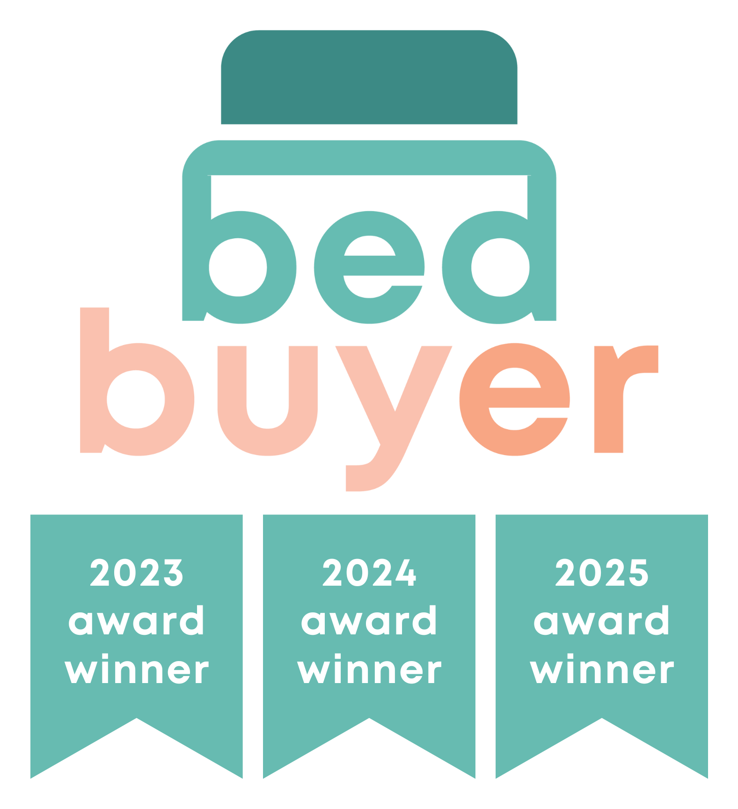

Award-winning, with the badge to prove it
Use these when creative says "award-winning" or needs a trust signal. They are Bedbuyer's artwork: use them exactly as supplied. Colour versions go on Off White, white or Light Pink. White versions go on dark grounds. Use one badge per piece. Full rules are in awards/AWARDS.md.
Bedbuyer · 2023, 2024, 2025
Default. 3-year stacked, colour, light grounds

3-year framed, colour, light grounds
2025 horizontal, colour, light grounds, thin strips
2025 horizontal, white, dark grounds, thin strips
2025 stacked, white, dark grounds
In use
Award-winning bamboo bedding
Award-winning bamboo bedding
There's no white 3-year version, so on a dark ground the colour badge sits on an Off White card. Never put a colour badge straight onto a dark colour, Light Green or Light Blue, because its teal blends into them.
The award category hasn't been confirmed. Until it is, don't name a winning product or category.